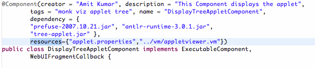

To Install a component with an applet i.e. if the component needs to bundle an applet as an UI element, use the @ComponentNatures annotation. It provides an array of @ComponentNature annotations (you can use @ComponentNature by itself -it would work as well), the extClass is the applet's main class and dependency attribute should only include jar files that cannot be auto discovered by jarjar library because of many reasons including Class.forName usage. In the example below com.applet.FooApplet.class is the Applet's main class (class with applet lifecycle functions), the dependency jar mysql-connector-java-3.0.15-ga-bin.jar" is used by the applet and is not autodetected by the jarjar library, thus it needs to be included in the list. This applet class might depend upon any number of other jars and any other class, those would be packaged along with the jar applet. You can even have multiple applets in the same component and the plugin would package each in separate jar file -the name of the applet jar by convention is Class.getName().replace(".class").append(".jar").toLowerCase() -so in the above example the packaged applet jar file will be named com.applet.fooapplet.jar You would need to add the applet depdendencies to the projects classpath, and the applet should compile in the current project do not use the @Component.dependency attribute to list those dependencies. Do not use @Component.resources attribute as the files listed in the resources attribute are all added to the component jar file. See the example below. 
If an applet uses many images and a whole of resources like property files, velocity templates etc. it might be easier to jar those resources and add that jar to the eclipse classpath and list the jar file name as a dependency in the @ComponentNature.dependency array. Then in your applet use getClass().getResourceAsInputStream() to get the bytes and convert that into an imageicon or read it as a property file. The plugin does not create the jar file automatically for you -you would would have to do create the file and add it to the project classpath.